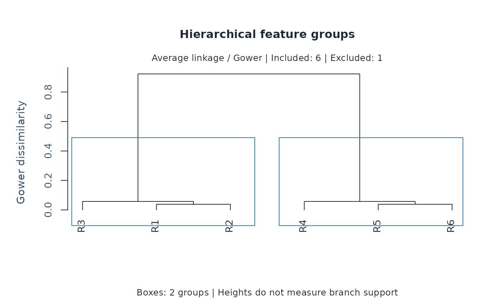
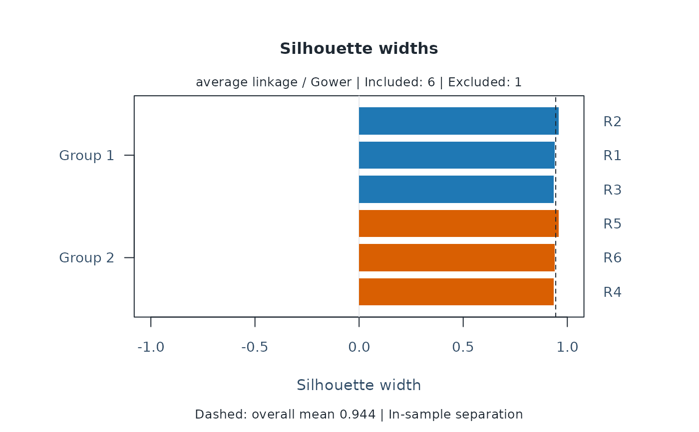
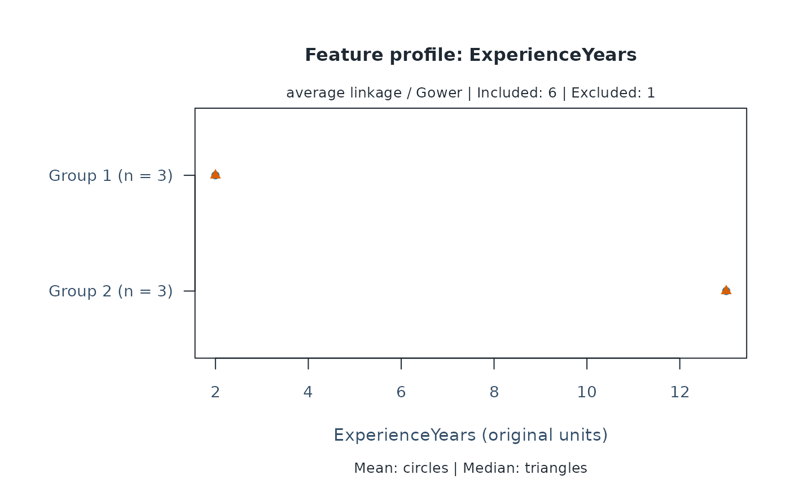

Hierarchical grouping of external features
Source:R/api-hierarchical-clustering.R
mfrm_cluster_hierarchical.RdBuild an agglomerative hierarchy from weighted Gower dissimilarities, cut it into a chosen number of groups, and inspect the retained dendrogram.
Arguments
- x
For clustering, a table reviewed with
mfrm_features(). For plotting, anmfrm_hierarchical_clustersresult.- k
Number of groups, an integer from 2 to one less than the number of included entities, and no greater than their number of distinct profiles. The number is chosen by the user, not optimized automatically.
- weights
Optional named, strictly positive finite numeric vector with one weight per selected feature. Defaults to equal weights. Names, not vector order, identify features. Remove a feature to exclude it.
- missing
Either
"error"(default) or"omit". The latter excludes incomplete entities explicitly, retaining their IDs, reasons, and missing group membership in the result. No values are imputed.- linkage
"average"(default, UPGMA) or"complete". Average linkage uses the mean dissimilarity over all cross-group pairs; complete linkage uses their maximum. Neither is selected automatically from the data.- type
"dendrogram"(default),"silhouette", or"profile".- feature
A single selected feature name, required for
type = "profile". Numeric features show means and medians in their original units; categorical features show within-group proportions in the original level order (including unused factor levels).- labels
Whether to display entity IDs on dendrograms and silhouettes. The default labels at most 50 included entities. Hiding labels does not remove entities. Profile plots always label groups and levels.
- draw
Draw the plot when
TRUE;FALSEonly returns plotted values.- preset
Plot style:
"standard","publication","compact", or"monochrome".- ...
Reserved for future use; additional arguments are rejected.
Value
An mfrm_hierarchical_clusters object inheriting from mfrm_clusters.
It retains the hclust object in tree, ID-aligned membership (ID,
Cluster, Silhouette), cluster_summary, profiles, feature_data, and
settings including the linkage. Hierarchical clustering does not select
medoids; medoids is NULL and membership has no Medoid column.
summary() returns the size/silhouette table. plot() invisibly returns
mfrm_plot_data; dendrogram data include the tree, leaf order, memberships,
group count, and excluded IDs.
Details
Uses stats::hclust() followed by stats::cutree() at the requested k.
Feature types, scaling, weights, missingness handling, silhouette definition,
and the 5,000-included-entity limit follow mfrm_cluster(). No distance
transformation or automatic sampling is performed. This limit is not a
memory or speed guarantee.
Only average and complete linkage are supported. Ward's minimum-variance criterion requires an appropriate Euclidean geometry; this mixed-feature Gower interface does not define a Euclidean conversion or a Ward analysis. Clustering MFRM bias estimates is a separate methodological question from grouping the external attributes accepted here. Measurement uncertainty is not propagated.
The tree is fitted independently of PAM. Its merge heights describe the
selected linkage on Gower dissimilarities, not significance or branch support.
Tied distances can produce alternative hierarchies and input order can affect
their resolution. A cut at k uses merge order even when heights tie, so a
horizontal height threshold need not uniquely identify that cut.
The default plot draws this stored tree, with boxes marking the stored k
groups. Labels are shown for at most 50 included entities by default; hiding
labels does not sample or remove entities. Excluded entities have no leaves
but remain in the result and plot data. Silhouette and feature-profile views
reuse plot.mfrm_clusters(). Plots do not refit or choose groups.
Automatic as_ggplot() conversion is not supported; use plot() for the
stored hierarchy or plot_data() to extract it for custom graphics.
Use mfrm_cluster_compare() to compare this partition with PAM or another
linkage on the same data. For multiple imputations, use
mfrm_cluster_imputed(..., method = "hierarchical", linkage = "average").
Each completion retains its own tree; no pooled tree or branch support is
estimated. See vignette("mfrmr-external-features", package = "mfrmr").
References
Murtagh, F. and Legendre, P. (2014). Ward's Hierarchical Agglomerative Clustering Method: Which Algorithms Implement Ward's Criterion? Journal of Classification, 31, 274–295. doi:10.1007/s00357-014-9161-z .
Examples
if (requireNamespace("cluster", quietly = TRUE)) {
# Fictional rater backgrounds; R7 has unrecorded experience.
raters <- data.frame(Rater = paste0("R", 1:7),
ExperienceYears = c(1, 2, 3, 12, 13, 14, NA),
Specialty = factor(c(rep("Language", 3), rep("Science", 4))))
features <- mfrm_features(raters, "Rater", c("ExperienceYears", "Specialty"))
hierarchy <- mfrm_cluster_hierarchical(features, k = 2, missing = "omit")
plot(hierarchy)
plot(hierarchy, type = "silhouette")
plot(hierarchy, type = "profile", feature = "ExperienceYears")
comparison <- mfrm_cluster_compare(list(
PAM = mfrm_cluster(features, k = 2, missing = "omit"),
Average = hierarchy,
Complete = mfrm_cluster_hierarchical(features, k = 2,
linkage = "complete", missing = "omit")))
comparison$analysis_summary
summary(comparison)
}



#> First Second Partitions Included Pairs MeanChangedFraction
#> 1 PAM Average 1 6 15 0
#> 2 PAM Complete 1 6 15 0
#> 3 Average Complete 1 6 15 0
#> MinChangedFraction MaxChangedFraction MeanAdjustedRand
#> 1 0 0 1
#> 2 0 0 1
#> 3 0 0 1